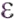

Captura y Estructuración de Datos¶
Alistamiento de insumos¶
La primera parte de tutorial corresponde a la descarga e importación de datos en QGIS. Para llevar a cabo cada uno de los pasos, es necesario que descargues el material de práctica y sigas las instrucciones del tutorial.
TIP
Si deseas agregar otras fuentes de información como referencia a la información proporcionada, puedes hacerlo haciendo uso de QGIS y sus diferentes funcionalidades.
Paso 1: Conexión a la base de datos¶
Para empezar, se debe definir la conexión a la base de datos. Para realizar este proceso, dirígete al panel «Navegador» ubicado a la izquierda de la interfaz de QGIS, en el árbol que se despliega ubica la sección GeoPackage, haz clic derecho sobre esta sección y selecciona la opción de Conexión nueva. Una vez se despliega el panel de navegación, deberás ubicar la base de datos taller_asistente.gpkg (disponible en los datos del tutorial) y dar clic en el botón Abrir para configurar la conexión a la base de datos.
IMPORTANTE
Como resultado de este proceso se tendrá conexión a una base de datos que posee diversa información, de la cual se hará uso a medida que se avance en las secciones de este tutorial.

TIP
Con el fin de tener una mejor referencia de la zona de trabajo, se recomienda instalar el complemento QuickMapServices, que proporciona un conjunto de servicios Web que pueden ser utilizados como mapas base. Por ejemplo, algunos permiten desplegar imágenes satelitales sobre el mapa.

Consulta de dominios¶
Paso 1: Tabla de atributos¶
Para proceder a la consulta de dominios debes dirigirte al grupo «domains» ubicado en el panel de capas de QGIS, abrir el grupo y buscar el dominio de interés. Sobre éste debes dar clic derecho y seleccionar la opción Abrir tabla de atributos en el menú de contexto que se despliega.
El ejemplo que se muestra a continuación se desarrolla con la capa lc_puntotipo.
{kind=link}
TIP
Puedes acceder a la tabla de atributos de la capa de interés, ubicándote sobre la misma en el panel de capas y tecleando F6.
{kind=link}
Paquete de topografía y representación¶
Puntos de lindero¶
Paso 1: Cargue de insumos Punto lindero¶
Inicialmente, se arrastra la capa de insumo llamada topo_puntos_lindero al mapa de QGIS.
{kind=link}
Paso 2: Creación de punto lindero¶
Entiéndase “Puntos de lindero” como aquellos puntos que definen los vértices de un lindero.
Para crear puntos de lindero debes seguir la ruta LADM-COL -> Captura y estructuración de datos -> Levantamiento Catastral -> Topografía y Representación -> Crear Punto.
{kind=link}
Paso 3: Selección del tipo de punto¶
La acción anterior desplegará un cuadro de diálogo con la opción para seleccionar la clase de punto que se desea importar. En este caso, selecciona Punto Lindero y luego haz clic en Siguiente.
{kind=link}
Paso 4: Selección de los datos punto lindero¶
Ahora debes seleccionar el conjunto de datos a importar. La fuente de estos puede ser un archivo separado por comas (CSV) o una capa vectorial.
Para este caso, elige el conjunto de datos que ya está cargado en la interfaz de QGIS, topo_punto_lindero, y procede a dar clic en el botón Importar.
{kind=link}
Paso 5: Diálogo del mapeo de campos para punto lindero¶
Tan pronto realices el paso anterior, se abre un cuadro de diálogo en el cual se encuentra el mapeo de la información levantada en campo comparada con la información que requiere el modelo.
{kind=link}
ADVERTENCIA
Resulta de gran importancia esta sección ya que es la base de la importación de información restante.
Paso 6: Definición del mapeo de campos para punto lindero¶
La capa lc_punto_lindero cuenta con cinco atributos obligatorios, estos son:
Item |
Entidad |
Atributo |
Contenido |
|---|---|---|---|
1 |
LC_PuntoLindero |
ID_Punto_Lindero |
Cadena de texto |
2 |
LC_PuntoLindero |
Punto Tipo |
LC_PuntoTipo |
3 |
LC_PuntoLindero |
Acuerdo |
LC_AcuerdoTipo |
4 |
LC_PuntoLindero |
Exactitud Horizontal |
Numérico |
5 |
COL_Punto |
Metodo Producción |
Col_MetodoProduccionTipo |
Considerando esto, en el cuadro de diálogo del mapeo de campos (imagen anterior) procede a dar clic en el botón «Generar expresión»  para los atributos obligatorios mencionados en la tabla anterior.
Para asignar códigos (t_id) de un dominio con base en sus valores, se hace uso de la siguiente función:
get_domain_code_from_value('Nombre de la tabla del dominio' (Texto),
valor del dominio a buscar (Texto),
Indica si el valor es iliCode o no (Booleano),
Indica si validar conexión o no (Booleano),)

Para el caso del mapeo de atributos obligatorios para Punto Lindero, debes asignar las siguientes expresiones:
Atributo |
Expresión |
|---|---|
id_punto_lindero |
id_punto |
puntotipo |
get_domain_code_from_value(“lc_puntotipo”, punto_tipo, True, False) |
acuerdo |
get_domain_code_from_value(“lc_acuerdotipo”, acuerdo, True, False) |
exactitud_horizontal |
1 |
metodoproduccion |
get_domain_code_from_value(“col_metodoproducciontipo”, “Metodo_Directo”, True, False) |
ADVERTENCIA
Para el caso del campo metodoproduccion, se utiliza el texto 'Metodo_Directo' ya que los datos iniciales no cuentan con información para este campo.
Una vez que se diligencian cada uno de los atributos al interior del formulario, se obtiene el siguiente resultado:
{kind=link}
Paso 7: Resultado de la ejecución punto lindero¶
Una vez terminado el mapeo de campos, debes dar clic en Ejecutar y al terminar el proceso podrás visualizar el siguiente mensaje de validación. Puedes leer su contenido (por ejemplo, «146 features copiados») para verificar que la ejecución haya sido exitosa y cerrar el cuadro de diálogo.
{kind=link}
Puntos de levantamiento¶
Paso 1: Cargue de insumos punto levantamiento¶
Inicialmente, se arrastra la capa de insumo llamada topo_puntos_levantamiento al menú de capas de QGIS.
{kind=link}
Paso 2: Creación de punto levantamiento¶
Para iniciar con el proceso de importación debes dirigirte a la barra de herramientas del plugin y dar clic en Crear objetos de levantamiento -> Crear punto.
{kind=link}
Paso 3: Selección de los datos punto levantamiento¶
Al realizar el paso 2 se desplegará un cuadro de diálogo donde se deberá seleccionar el tipo de punto a insertar, en este caso: Punto Levantamiento. Confirma por medio del botón Siguiente , y escoge el conjunto de datos fuente para el procesamiento, que para este caso corresponde a la capa topo_punto_levantamiento. Finalmente presiona el botón Importar.

Paso 4: Mapeo de campos punto levantamiento¶
Se recomienda tener en cuenta el paso 5 de la sección de punto de lindero. Para este caso, debemos asignar los valores de la siguiente manera:
Atributo |
Expresión |
|---|---|
id_punto_levantamiento |
id |
puntotipo |
get_domain_code_from_value(“lc_puntotipo”, punto_tipo, True, False) |
tipo_punto_levantamiento |
get_domain_code_from_value(“lc_puntolevtipo”, “Construccion”, True, False) |
exactitud_horizontal |
1 |
metodoproduccion |
get_domain_code_from_value(“col_metodoproducciontipo”, “Metodo_Directo”, True, False) |
ADVERTENCIA
Para el caso del campo metodoproduccion, se utiliza el texto 'Metodo_Directo' ya que los datos iniciales no cuentan con información para este campo.
Para el caso del campo tipo_punto_levantamiento, se utiliza el texto 'Construccion' ya que los datos iniciales no cuentan con información para este campo.
{kind=link}
Después, debes ejecutar el proceso de importación de datos dando clic al botón Ejecutar, obteniendo el siguiente resultado:

Puntos de Control¶
Paso 1: Importación del CSV puntos de control¶
Los “Puntos de Control” se importarán a través de un archivo con extensión *.csv. Para ello debes abrir el Administrador de fuentes de datos de QGIS, el cual despliega una interfaz en donde se debe seleccionar la opción Texto delimitado. Luego es necesario seleccionar la opción CSV (valores separados por coma) y posteriormente en la casilla del nombre del archivo presionas el botón de los puntos suspensivos para ubicar el archivo topo_punto_control.csv, que se encuentra en los insumos suministrados.

Paso 2: Definición de la geometría¶
En la misma interfaz debes dirigirte a desplegar las opciones de definición de la geometría. Verifica que en el campo X se encuentre el atributo lon, que en el campo Y esté el atributo lat y por último, que en el SRC de la geometría se relacione la proyección 9377 - MAGNA-SIRGAS / Origen-Nacional.
Una vez que se cumpla con estos requisitos, se debe dar clic en el botón Añadir.

Paso 3: Creación de punto control¶
Para iniciar con el proceso de importación debes dirigirte a la barra de herramientas del plugin y hacer clic en Crear objetos de levantamiento -> Crear punto.
Paso 4: Selección de los datos punto control¶
Al realizar el paso 2 se desplegará un cuadro de diálogo donde se deberá seleccionar el tipo de punto a insertar, en este caso: Punto Control. Confirma por medio del botón Siguiente, y escoge el conjunto de datos fuente para el procesamiento, que para este caso corresponde a la capa topo_punto_control. Finalmente presiona el botón Importar.

Paso 5: Mapeo de campos punto control¶
Se recomienda tener en cuenta el paso 5 de la sección de punto de lindero. Para este caso, debemos asignar los valores de la siguiente manera:
Atributo |
Expresión |
|---|---|
id_punto_levantamiento |
nombre |
puntotipo |
get_domain_code_from_value(“lc_puntotipo”, punto_tipo, True, False) |
tipo_punto_control |
get_domain_code_from_value(“lc_puntocontroltipo”, “Control”, True, False) |
exactitud_horizontal |
1 |
exactitud_vertical |
1 |
metodoproduccion |
get_domain_code_from_value(“col_metodoproducciontipo”, “Metodo_Directo”, True, False) |
ADVERTENCIA
Para el caso del campo metodoproduccion, se utiliza el texto 'Metodo_Directo' ya que los datos iniciales no cuentan con información para este campo.
Para el caso del campo tipo_punto_control, se utiliza el texto 'Control' ya que los datos iniciales no cuentan con información para este campo.
{kind=link}
Después, debes ejecutar el proceso de importación de datos dando clic al botón Ejecutar, obteniendo el siguiente resultado:

Linderos¶
Paso 1: Cargue capa topo_lindero¶
El proceso de creación de linderos es muy similar a la creación de puntos. Se inicia con la carga de la capa suministrada llamada topo_lindero, de la siguiente manera:

Paso 2: Creación de linderos¶
En la barra de herramientas del Asistente LADM-COL, presiona el botón Crear objetos de levantamiento y selecciona la opción Crear lindero. Esto despliega un nuevo cuadro de diálogo en el cual debes elegir la opción Desde otra capa de QGIS y seleccionar la capa recién cargada, llamada topo_lindero. Posteriormente, haz clic en el botón Importar.

Paso 3: Mapeo de campos lindero¶
Se recomienda tener en cuenta el paso 5 de la sección de punto de lindero. Para este caso, debemos asignar los valores de la siguiente manera:
Atributo |
Expresión |
|---|---|
longitud |
$length |
ADVERTENCIA
Para el caso del campo longitud, se utiliza la expresión $length ya que los datos iniciales no cuentan con información para este campo.
Después, debes ejecutar el proceso de importación de datos dando clic al botón Ejecutar, obteniendo el siguiente resultado:
Paso 4: Construcción de Linderos¶
En el paso anterior se generó un conjunto de segmentos de línea a partir de la capa topo_punto_lindero. Con el objetivo de crear los linderos correctamente, es necesario que uses la herramienta Construir linderos.
TIP
Un lindero está bien construido topológicamente si cada uno de sus nodos finales conecta con más de un lindero. En otras palabras, un lindero no puede tener un nodo final que conecte con un solo lindero. Temáticamente, los nodos finales de un lindero marcan un cambio de colindancia.
Para acceder a esta herramienta, debes dirigirte a la barra de herramientas y dar clic en el botón Construir linderos. Se habilita un cuadro de diálogo en donde se pregunta: ¿Deseas utilizar todos los linderos de la base de datos?. Debes dar clic en Sí y cuando termine el proceso, click en Conmutar edición y guardar los cambios.

Relación entre Puntos de Lindero y Linderos¶
Paso 1: Creación de la relación¶
IMPORTANTE
Los puntos de lindero y los linderos tienen una relación topológica, puesto que los vértices de un lindero corresponden a puntos de lindero y viceversa. Dicha relación se debe almacenar de forma explícita en el modelo LADM-COL, en la tabla col_puntoccl.
Para llenar la tabla col_puntoccl con la relación entre los puntos de lindero y los linderos, se debe dar clic en el botón Llenar PuntosCCL ubicado en la barra de herramientas. Al hacerlo, se despliega un cuadro de diálogo en donde se pregunta ¿Quieres llenar la tabla “col_puntoccl” para todos los linderos de la base de datos? Para este caso debes dar clic en el botón Si.

Paso 2: Verificación de la relación¶
Para validar la ejecución exitosa de la herramienta, se puede abrir la tabla de atributos de la capa col_puntoccl, la cual se encuentra en el panel de capas dentro del grupo llamado tables.
Una vez que te ubiques sobre la capa col_puntoccl, debes dar clic en el botón Abrir tabla de atributos y se visualizará la información registrada.

Unidad Espacial¶
Terrenos¶
Paso 1: Creación de terreno¶
Dirígete al botón Crear objetos de Levantamiento (ubicado en la barra de herramientas) y selecciona la opción Crear Terreno:

Paso 2: Selección de linderos¶
Se desplegará una ventana en la cual se te consulta ¿Cómo te gustaría crear terrenos?, allí cuentas con dos opciones: Seleccionando linderos existentes ó Desde otra capa de QGIS (definiendo un mapeo de campos).
En este caso, se procede a elegir la opción Seleccionando linderos existentes y luego das clic en el botón Siguiente. En el cuadro de diálogo que se despliega, encuentras tres opciones que corresponden con:
Seleccionar lindero(s) en el mapa.
Seleccionar lindero(s) con base en una expresión.
Seleccionar todos los linderos.
Posteriormente, das clic en el botón Seleccionar todos los linderos y luego en el botón Finalizar.

Paso 3: Cálculo del área del terreno¶
Una vez que los terrenos han sido creados, es necesario calcular o en su defecto actualizar el área del terreno. Para ello, debes dar clic en el botón Abrir tabla de atributos ubicado en la barra de herramientas. Posteriormente, elijes en el menú desplegable del lado izquierdo el atributo Área de terreno [m2] y das clic en el botón Generar expresión , de esta forma se despliega la ventana de «Diálogo de expresiones», en la cual debes emplear la función area($geometry). Luego, basta con dar clic en el botón Aceptar.
Finalmente, al cerrar la ventana emergente debes dar clic en el botón Actualizar todo, de inmediato podrás ver que en la columna Área de terreno se asignaron los valores de área correspondientes. Para guardar dichos cambios presiona el botón Guardar edición  , luego, puedes cerrar la ventana.
, luego, puedes cerrar la ventana.

Relación entre Linderos y Terrenos¶
Paso 1: Creación de la relación¶
El diligenciamiento de esta relación se realiza con la herramienta Llenar más CCL y menos ubicada en la barra de herramientas. Al hacer clic en este botón, emergerá un cuadro de diálogo en el que se te pregunta si deseas ejecutar esta acción para todos los terrenos identificados en la base de datos. En este caso, se procede a dar clic en el botón Sí.

Paso 2: Verificación de la relación¶
Para verificar el estado de las relaciones creadas previamente, basta con abrir la tabla de atributos de la tabla col_masccl, y en la columna ccl_mas corroborar si los campos están diligenciados correctamente.

Construcciones¶
Paso 1: Cargar insumo construcción¶
En primera medida, debes cargar a tu espacio de trabajo la capa topo_construcciones, para esto, debes dirigirte al Navegador, seleccionar GeoPackage -> taller_asistente.gpkg y arrastrar la capa topo_construcciones al mapa, para que ésta sea cargada.
{kind=link}
Paso 2: Creación de las construcciones¶
Al desplegar el menú del botón Crear objetos de Levantamiento (ubicado en la barra de herramientas) debes seleccionar la opción Crear Construcción. Esta acción abrirá una ventana en la cual se te consulta ¿Cómo te gustaría crear construcciones?, para este caso selecciona la opción Desde otra capa de QGIS (definiendo un mapeo de campos).
En este caso, harás uso de la información registrada en la capa topo_construcciones. De manera que luego de definir la fuente mencionada, debes dar clic en el botón Importar.

Paso 3: Mapeo de campos¶
De inmediato, se desplegará la ventana de mapeo de campos, en la cual debes realizar las modificaciones correspondientes hasta obtener un mapeo de campos como el de la siguiente imagen:
{kind=link}
Se recomienda tener en cuenta el paso 5 de la sección de punto de lindero. Para este caso, debemos asignar los valores de la siguiente manera:
Atributo |
Expresión |
|---|---|
identificador |
$id |
numero_pisos |
num_pisos |
area_construccion |
area($geometry) |
ADVERTENCIA
Para el caso de identificador, se utiliza la expresión $id ya que los datos iniciales no cuentan con información para este campo.
Para el caso de area_construccion, se utiliza la expresión area($geometry) ya que los datos iniciales no cuentan con información para este campo.
Después de completar dichas modificaciones, haz clic en el botón Ejecutar. Cuando el proceso termine, puedes verificar los mensajes de la pestaña Registro y posteriormente cerrar la ventana.
Unidades de Construcción¶
Paso 1: Identificación de la construcción¶
Para iniciar con el proceso de crear las unidades de construcción se debe emplear la herramienta Identificar, ubicada en la barra de herramientas de QGIS. Esto se realiza con el propósito de extraer el valor t_id asignado al polígono que representa la construcción de interés.

Paso 2: Creación de unidades de construcción¶
Después de identificar el t_id de la construcción, se procede a crear las unidades de construcción. Para ello debes dirigirte a LADM-COL –> Captura Y Estructuración De Datos –> Levantamiento Catastral –> Unidad Espacial –> Crear Unidad De Construcción
De inmediato se desplegará un cuadro de diálogo, en el cual se te consulta como generar la unidad de construcción, puedes elegir entre cargar una capa vectorial o digitalizar el contenido. En este caso, se empleará la opción de digitalización, posteriormente das clic en el botón Crear.
{kind=link}
Paso 3: Formulario de la unidad de construcción¶
Al cerrarse la ventana se activará la herramienta de Autoensamblado, la cual ayudará con el proceso de digitalización, apoyándose de los Puntos levantamiento para definir la unidad de construcción. Digitaliza el polígono correspondiente. Tan pronto termines, debes dar clic derecho para finalizar este proceso.
Esta acción desplegará un formulario, el cual tiene casillas resaltadas, las cuales indican que es obligatorio diligenciar dichos campos. En la sección lc_construccion diligencia el t_id de la construcción consultada previamente.

{kind=link}
Servidumbre de tránsito¶
Paso 1: Creación de Servidumbre de tránsito¶
Para crear una Servidumbre de tránsito, debes dirigirte a la opción Crear objetos de levantamiento –> Crear Servidumbre de tránsito en la barra de herramientas.
De inmediato, se desplegará un cuadro de diálogo que habilitará tres (3) opciones: Digitalizando el eje, Digitalizando polígono y Desde otra capa de QGIS. Para este caso, selecciona la segunda opción, posteriormente das clic en el botón Crear.

Paso 2: Formulario de la Servidumbre de tránsito¶
Al cerrar la ventana anterior, se habilitará la opción para digitalizar la Servidumbre de tránsito junto con la herramienta de Autoensamblado. Grafica el polígono de tu interés y da clic derecho al finalizar la digitalización.
Una vez que termines la digitalización del polígono, se desplegará un formulario que tiene algunas casillas resaltadas, las cuales deben diligenciarse de forma obligatoria.
{kind=link}
{kind=link}
Fuentes¶
Para continuar con el desarrollo del tutorial, es necesario tener en cuenta los datos de prueba registrados a continuación:
Tabla fuentes administrativas¶
Variables |
Fuente 1 |
Fuente 2 |
Fuente 3 |
|---|---|---|---|
Tipo |
Escritura pública |
Escritura pública |
Escritura pública |
Estado |
Disponible |
Disponible |
Disponible |
Nombre |
escritura_01.jpg |
escritura_02.jpg |
escritura_03.jpg |
Observación |
Soporte Predio |
Soporte Predio |
Soporte Predio |
Paso 1: Crear fuente administrativa¶
En el botón Crear objetos de Levantamiento selecciona la opción Crear Fuente Administrativa.

Paso 2: Selección método de creación de la fuente administrativa¶
Se desplegará un cuadro de diálogo con dos opciones para crear una fuente administrativa: Ingresando datos manualmente en un formulario ó Desde otra capa de QGIS. Para este caso, selecciona la primera opción y presiona el botón Crear.
{kind=link}
Paso 3: Diligenciamiento de formulario fuente administrativa¶
Se despliega un formulario que debe ser diligenciado con los datos proporcionados en la tabla que se encuentra al inicio de esta sección.
{kind=link}
Paso 4: Adjuntar archivos en Fuente administrativa¶
Debes dirigirte a la pestaña extarchivo y agregar el archivo correspondiente a cada fuente administrativa.
TIP
Los archivos los encuentras en la carpeta compartida al inicio del tutorial Datos -> Soportes.

Una vez que se ha cargado el archivo, debes dar clic en Aceptar.
{kind=link}
RRR¶
Luego de haber creado interesados y fuentes administrativas, es necesario crear las relaciones entre estos. Para ello se deben Derechos, considerando la siguiente información:
{kind=link}
Paso 1: Seleccionar la fuente administrativa.¶
Debes dirigirte a la tabla de atributos de la fuente administrativa, y seleccionar la fila correspondiente a la información de la fuente administrativa que vas a asignar:

Paso 2: Crear Derecho¶
En el botón Crear objetos de Levantamiento selecciona la opción Crear Derecho.
{kind=link}
Paso 3: Selección método de creación del Derecho¶
Se desplegará un cuadro de diálogo con dos opciones para crear predios: Ingresando datos manualmente en un formulario o Desde otra capa de QGIS. Para este caso, selecciona la primera opción y presiona el botón Siguiente. En la ventana que se despliega, verifica que la fuente administrativa se encuentre seleccionada y posteriormente das clic en Crear.
TIP
También puedes seleccionar fuente(s) administrativa(s) desde la ventana de creación del derecho. Sin embargo, de ser así, tendrás que hacerlo construyendo una expresión.
{kind=link}
{kind=link}